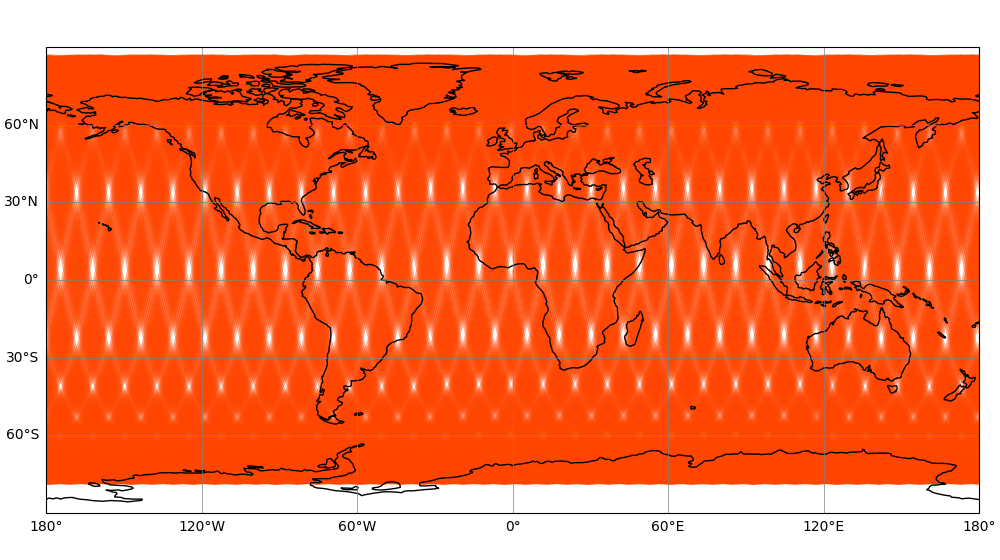
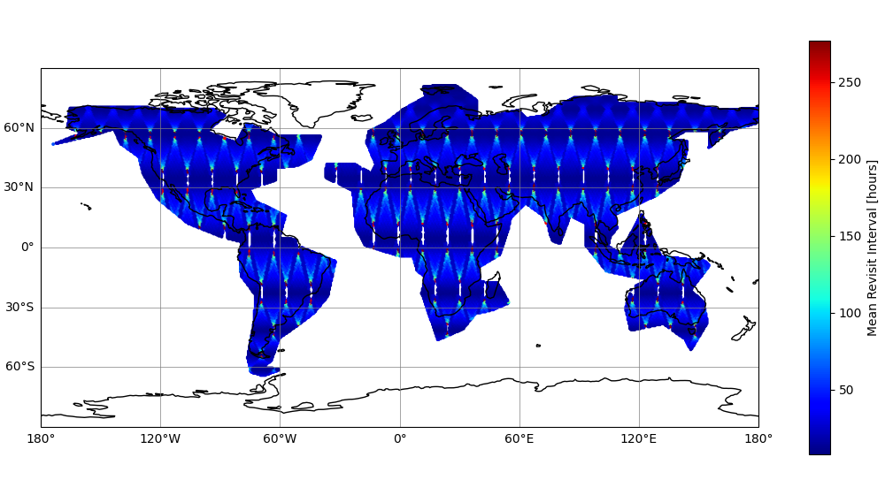
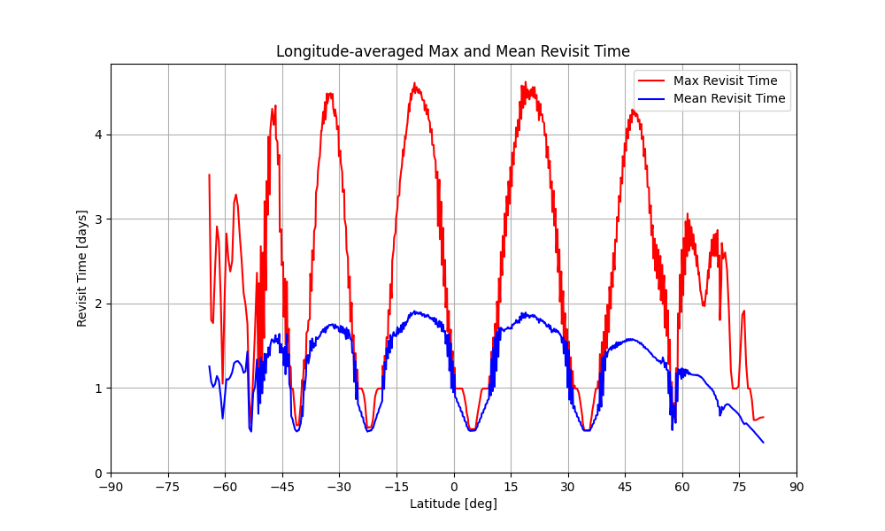

Polygon
SatSVS simulation report, generated 2026-07-15 15:59
obs_swath_push_broom
obs_swath_push_broom

obs_swath_push_broom.png

obs_swath_push_broom_revisit.png

obs_swath_push_broom_revisit_lat.png